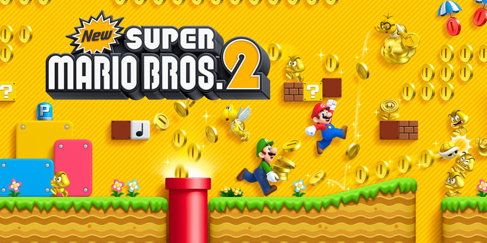

New Super Mario Bros. 2
New Super Mario Bros. 2 is een klassiek 2D-platformspel waarin Mario en Luigi op een missie zijn om Princess Peach te redden en zoveel mogelijk munten te verzamelen. Dit vervolg in de geliefde Mario-serie introduceert een nieuwe focus op het verzamelen van munten, met speciale gouden power-ups en uitdagende levels. Of je nu een beginnende speler bent of een ervaren fan van de Mario-serie, deze gids helpt je op weg naar een muntenrijk avontuur.
1. Basisprincipes en Doelen
Het hoofddoel in New Super Mario Bros. 2 is om Princess Peach te redden van Bowser, terwijl je onderweg zoveel mogelijk munten verzamelt. Het spel bevat meer dan 80 levels verspreid over verschillende werelden, elk gevuld met geheime paden, vijanden en power-ups.
- Munten verzamelen: Het spel introduceert de uitdaging om 1 miljoen munten te verzamelen. Alles in het spel draait om goud, dus neem de tijd om elk hoekje van de levels te verkennen.
- Reddingsmissie: Net zoals in eerdere Mario-games is het je taak om Princess Peach te bevrijden uit de klauwen van Bowser.
2. Power-Ups en Gouden Transformaties
New Super Mario Bros. 2 biedt een breed scala aan power-ups, waaronder enkele nieuwe, goudgerelateerde mogelijkheden:
- Super Mushroom: Vergroot Mario zodat hij meer schade kan weerstaan.
- Fire Flower: Hiermee kan Mario vuurballen schieten om vijanden te verslaan en blokken te vernietigen.
- Gold Flower: Verandert Mario in Gold Mario, waarmee hij gouden vuurballen kan schieten die vijanden en blokken in munten veranderen.
- Raccoon Leaf: Geeft Mario een staart waarmee hij kan vliegen, zweven en vijanden kan slaan.
- Mini Mushroom: Verkleint Mario, zodat hij in kleine ruimtes kan komen en hoog kan springen.
3. Muntenuitdagingen
Het verzamelen van munten is het middelpunt van dit spel, en er zijn verschillende manieren om je muntenaantal te verhogen:
- Gold Rings: Activeer deze om vijanden tijdelijk in gouden versies te veranderen. Versla ze om extra munten te verdienen.
- Gold Blocks: Draag een gouden blok op je hoofd om een constante stroom munten te genereren terwijl je rent.
- Hidden Rooms: Verken elk level grondig om verborgen ruimtes en geheime bonusgebieden te vinden, vaak gevuld met munten.
4. Werelden en Levels
Het spel bevat zes hoofdwerelden en drie bonuswerelden, elk met unieke thema’s en uitdagingen:
- World 1: Een klassieke, grasrijke startwereld die spelers kennis laat maken met de basis van het spel.
- World 2: Een woestijnwereld met bewegende zandvloeren en verborgen gangen.
- World 3: Een waterwereld gevuld met onderwaterniveaus en vijanden zoals Cheep-Cheeps.
- World 4: Een junglethema met giftige wateren en bewegende platforms.
- World 5: Een sneeuwwereld met gladde oppervlakken en ijzige uitdagingen.
- World 6: Het lavaterritorium van Bowser, met intense obstakels en het laatste gevecht.
- Bonuswerelden: Ontgrendel Mushroom, Flower en Star Worlds voor extra uitdaging en beloningen.
5. Co-op Multiplayer
Speel samen met een vriend in de co-op-modus, waarbij één speler Mario bestuurt en de ander Luigi. Werk samen om munten te verzamelen en vijanden te verslaan, of maak er een competitie van om te zien wie de meeste munten kan pakken!
6. Tips en Trucs
- Spring op Gold Koopas: Laat ze hun schild gooien en volg het schild om extra munten te verdienen.
- Speur naar geheime uitgangen: Veel levels hebben alternatieve uitgangen die leiden naar bonuslevels of korte routes.
- Gebruik je Gold Flower slim: Bewaar deze voor niveaus met veel vijanden of blokken om je muntentotaal snel te verhogen.
- Reis terug naar eerdere levels: Als je een nieuwe power-up hebt, kun je eerdere levels herhalen om meer munten of geheimen te vinden.
Conclusie
New Super Mario Bros. 2 biedt een spannende mix van klassieke platformactie en een vernieuwende focus op munten. Door gebruik te maken van de power-ups, geheime paden en samenwerking in de co-op-modus, kun je de ultieme Mario-ervaring beleven. Veel succes met je avontuur en vergeet niet: elke munt telt!